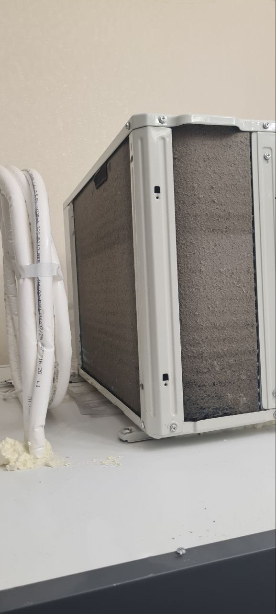
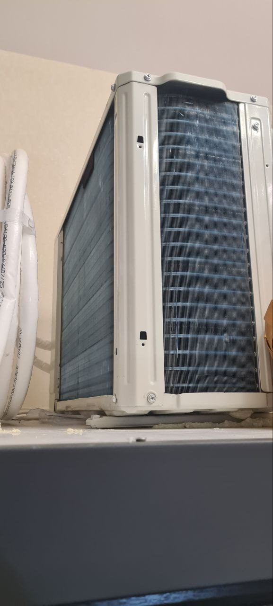

Короткий ответ: Большинство срезанных цветов хранят при +2…+5 °C и влажности 85–95 %. Розы, хризантемы и тюльпаны любят холод ближе к +2 °C, а тропические цветы (орхидеи, антуриумы, стрелиции) нельзя держать ниже +12…+15 °C: от холода на них появляются тёмные пятна. Главное, чтобы камера держала температуру ровно, без скачков.
Температура хранения популярных цветов
| Розы, хризантемы, гвоздики, тюльпаны, гербера | +2…+5 °C |
| Лилии, альстромерии, эустома | +3…+6 °C |
| Зелень для букетов (эвкалипт, рускус, писташ) | +2…+5 °C |
| Орхидеи, антуриумы, стрелиции, имбирь | не ниже +12…+15 °C |
Влажность для большинства цветов 85–95 %. В слишком сухом воздухе лепестки быстро вянут и сохнут по краям, а при постоянном конденсате на бутонах появляется серая гниль.
Почему важна ровная температура
Для цветов опаснее не сама температура, а её скачки. Если камера то охлаждает до +1 °C, то прогревается до +10 °C, на лепестках выпадает конденсат, бутоны раскрываются раньше времени, а букет живёт в витрине на несколько дней меньше. Поэтому холодильник для цветов должен держать температуру в пределах 1–2 градусов.
Камера и витрина: в чём разница
- Холодильная камера нужна для хранения запаса: цветы стоят в ней в вёдрах с водой при +2…+5 °C.
- Холодильная витрина нужна для показа покупателю. В ней обычно чуть теплее, около +5…+8 °C, и дверь открывают чаще.
Если ставить свежую поставку сразу в витрину, она простоит меньше. Лучше сначала дать цветам «отдохнуть» в камере.
Почему камера перестаёт держать холод
Самая частая причина, которую мы видим на выездах: грязный радиатор (конденсатор) холодильного агрегата. Агрегат обычно стоит на крыше камеры и забирает тёплый воздух из зала, а вместе с ним пыль и пыльцу. За сезон радиатор зарастает так, будто покрыт войлоком.

Через такой радиатор воздух почти не проходит. Агрегат перегревается, работает без остановки, хуже держит температуру и больше тратит электричества. Если ничего не делать, в какой-то момент он выключится по защите или сгорит компрессор. Обычно это случается в самый жаркий день или перед праздником, когда камера забита товаром.

Как продлить жизнь цветов в камере
- Держите температуру по таблице выше и следите за термометром каждый день.
- Не ставьте цветы вплотную к вентилятору испарителя: прямой холодный поток сушит и подмораживает бутоны.
- Не перегружайте камеру: между вёдрами должен проходить воздух.
- Реже открывайте дверь и не оставляйте её открытой во время приёмки товара.
- Не загораживайте агрегат на крыше камеры коробками: ему нужен воздух.
Как часто обслуживать холодильник для цветов
Мы советуем обслуживать холодильное оборудование цветочного магазина минимум 3–4 раза в год: обязательно весной перед жарой и перед праздничными пиками продаж (8 Марта, 1 сентября, Новый год). Мастер чистит радиатор агрегата и испаритель, проверяет давление фреона, температурные режимы и дренаж. Для магазинов работаем по договору с выездами по графику.
Подробнее: холодильное оборудование для цветочных магазинов в Могилёве, в Минске. Если камера уже остановилась, звоните: при аварии выезжаем в день обращения.
Вопросы и ответы
Можно ли хранить цветы в обычном бытовом холодильнике?
Нет, бытовой холодильник с этим не справится. В нём сухой воздух, цветы быстро теряют влагу и вянут, и он не рассчитан на частое открывание двери и большой объём. Для магазина нужна камера или витрина с правильной влажностью.
Почему в камере появился конденсат и плесень?
Чаще всего из-за скачков температуры, забитого дренажа или частого открывания двери. Нужна проверка оборудования.
Что делать, если камера перестала холодить?
Перенесите самые нежные цветы в витрину или прохладное место и позвоните нам. При аварии выезжаем в день обращения.